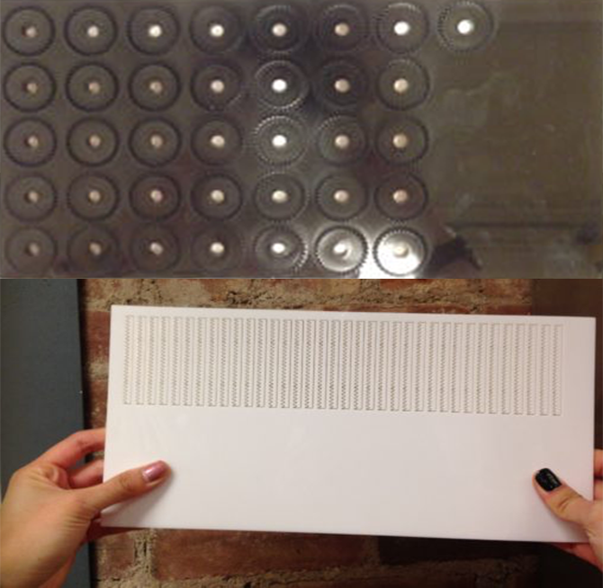
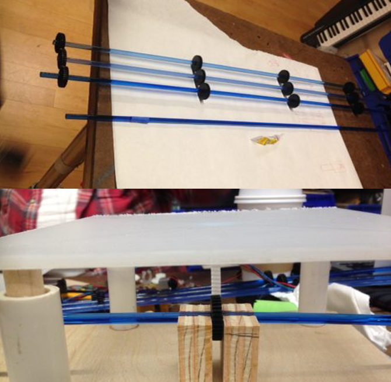
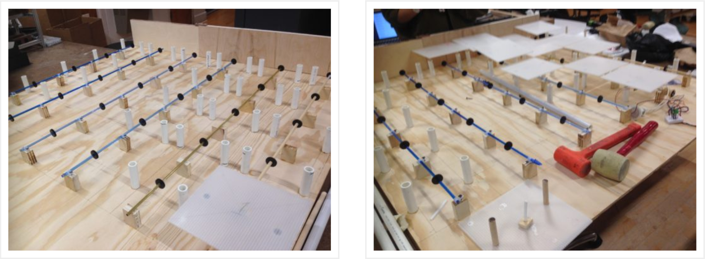
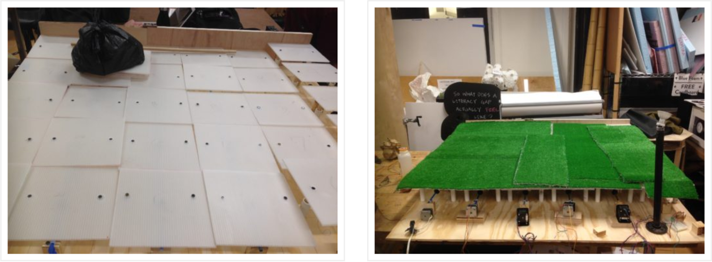
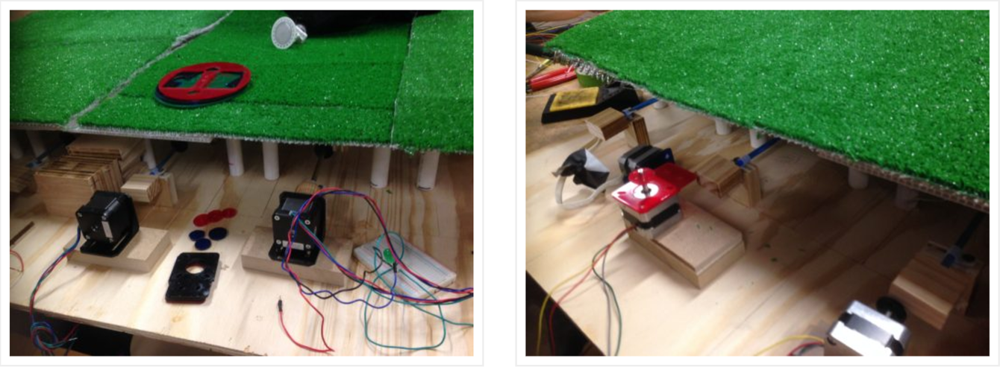
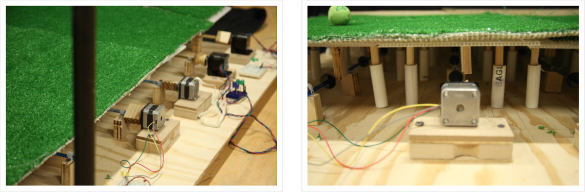

Process
The process for creating Pawnetic Playground happened in three main pillars:
- The Structure
- Designing the Mechanism
- Electronics
The Structure
From the beginning we planned on creating a grid of tiles on an 8×8 platform that when pressed down, took this kinetic energy to perform a job such as light up LEDs above the structure. From the earliest sketches, we knew we wanted the grid system, but how the structure would interact with the mechanism changed over time.
We initially planned for layered tiles, where the top would be the grass layer. Our first iteration saw a spandex layer under the grass that would stretch down with pressure and trigger the mechanism. Being too elastic and unstable for a dog to walk on, the spandex idea was replaced with a trampoline material layer. However, getting a small trampoline-like layer on an 4"x4" square also did not seem like the best option. The material, we imagined, needing to be pulled tight, would in turn be too strong and not release low enough with pressure of the dog on top. It would also call for a frame structure on each tile that might cause discomfort or frighten a dog upon stepping on such a feeling underneath a grass later.
We finally landed on a tile plan that connected it directly with the mechanism through a series of springs and rods for support.

The Mechanism
Figuring out the mechanism, the heart of the project, took a lot of time, testing and research. We looked into using piezo sensors, but learned that those were very inefficient and ineffective for harnessing kinetic energy. The idea of using a system like that of a clock was thrown around. We also thought about using levers. In the end, our research led us to a gear and spring mechanism, where we found inspiration from this road system that harnesses the the of driving cars.
We initially tested an initial gear mechanism with pre-packaged gears and had good results. Then moved on to design home-made gears and gear shafts using Vector Works, acrylic and the laser cutter.
They were designed to fit the rods perfectly.We tested out our tile prototype with our mechanism and had success.
The Motors
After testing our mechanism with DC motors and Stepper motors, we pulled the best and most efficient results using the stepper motors. With just a bit of torque, the brief turn of the gear mechanism produced a quick powerful burst of light.
In the end, we did not need the bevel gears seen in the video. We were able to directly attach the mechanism to the motors with special attachments connecting the rods with the gears to the stepper motors.
Put It All Together
While gathering the parts and building the structure we made various design changes to the project. To keep the project to a reasonable and manageable size, we decided to keep it to a 4×4 base. Initially we planned to have a rod and spring system supporting each corner of the tiles, but to fit in a reasonable budget we determined that each tile could still be best supported but two rod and spring support structures.
The final structure includes 6 rows of rods and gears with5 tiles on each row, with each row connecting to a stepper motor. In other words, there were 6 individual gear systems on a grid of 5×6 tiles, 8×8 inches each tile.
We have three types of rods with gears: wood, acrylic and brass. To our surprise, the acrylic worked best in the user testing. For long-term use, we may consider changing them all to brass, for best wear and tear.
Each supporting rod was about 2.5 inches in height and fits comfortably into a PVC tube about 3 inches in height. Inside the tube is where the spring sits. After some testing, we realized that with this height, the tiles were too low to the board. If one tile along a particular rod was pressed down, it would off set the other tiles and not work smoothly. So we added about a half inch of height to each tile by inserting a half inch of rod into the PVC tube at the base, resting the spring on top of that addition.
Once the tiles were placed into the grid, the grass layer was finally added on top. In a future iteration of this, we plan to have one 4×4 sheet of grass instead of strips as seen here.
Each motor was attached to the rods with the gears with a special acrylic piece designed by Renata. Each motor was then mounted on top of a platform and attached to the mechanism.
Initially we had planned to have the lights connect to the motor through a bridge rectifier and capacitor configuration, however, this did not produce bright, powerful bursts of light that we needed, which is why we decided to have the lights connect directly to the motor.
 The Result
After assembling the structure together, connecting it with the mechanism and the motors, we had success! When a dog runs briskly around the playground, the tiles trigger the mechanism which turn the motors which light the LEDs. However, if a user just sits and naps on the playground none of the above will happen. The user must be ready for playtime, not nap-time, when it comes to experiencing Pawnetic Playground at its best.